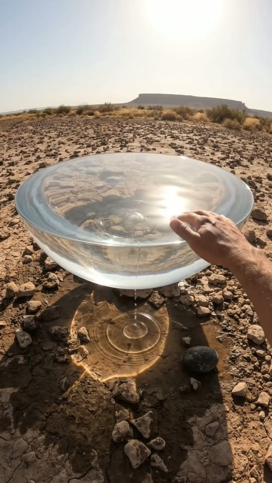
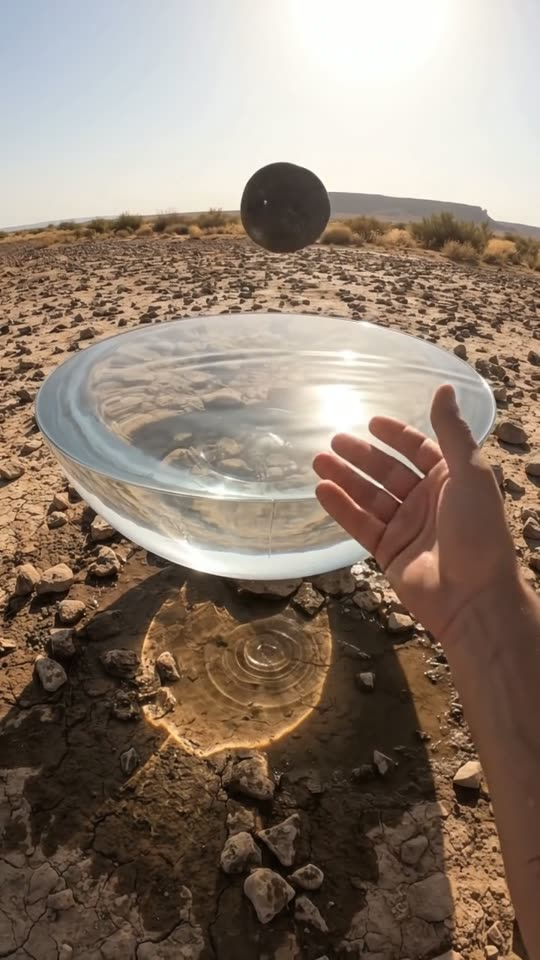
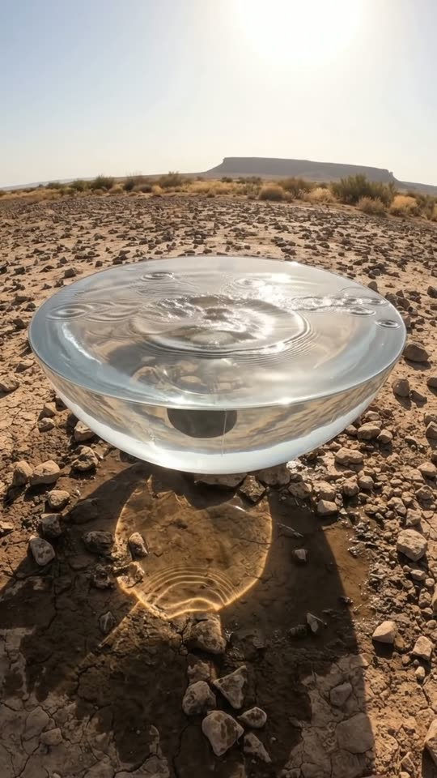
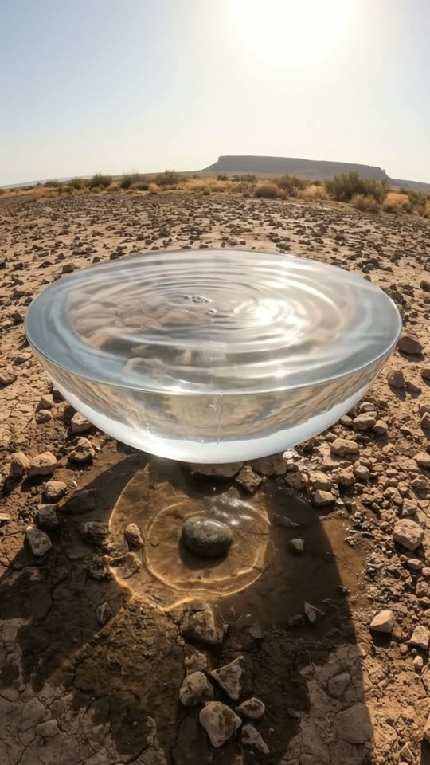

Free prompt pack
No groundunder it.
Nobody hung a puddle in the air. One still image and one prompt that describes the shot second by second.
Every prompt, in the order I ran them. Copy them whole. Touch the water.
The first frame
Water with no bowl. This image is frame one: the floating water, the wet patch under it, the arm and the desert all come from it, and the fingertips are already on the surface.
Watch out
Check two things before the video: no glass rim on the water, and no camera or strap at the bottom of the frame.

The prompt 136 words
First-person photo taken at chest height with a wide-angle lens slightly curved at the edges, standing in a rocky desert of cracked dry earth and scattered stones under a hot afternoon sun. One metre in front, a body of clear water with no container hangs in mid-air at hip height: its flat glassy surface mirrors the sun and the pale sky and runs right to its edge, which curves under like the edge of a giant water drop into a smooth rounded underside. Open air separates it from the ground, where drops fall onto a dark patch of wet earth inside its shadow full of rippling light. A bare right forearm reaches in from the bottom right, fingertips touching the surface, rings spreading. On the horizon, a flat-topped mesa and dry shrubs. Real photo, natural colour.
The take
Ten seconds, written second by second. Add the image from step 01 as the reference, set 10 s, 9:16, 720p and audio on, and paste the prompt whole.
- 0–1.2 sfingertips make rings
- 1.2–2.6 spick up a stone
- 2.6–3.6 stoss it in
- 3.6–4.6 sit sinks through
- 4.6–5.2 sout the bottom, into the dust
- 6.4–10 sa handful of floating water
Watch out
Keep the person still: only the arms move. If the camera walks or tilts to follow the stone, the trick falls apart.
Fragments



The prompt 1455 words
FORMAT Real first-person video shot at chest height with an action-camera wide-angle lens, seen as the finished exported video file: the full picture edge to edge, nothing on top of it. The camera itself, its strap and the person's chest and body are never in frame: only the arms and hands. One continuous take in real time, no cuts. Vertical frame. The video runs at 24 fps. No frame is repeated. Real time, 1x speed, never slow motion. SCENE In a rocky desert, a body of real water with no container floats in the air at hip height, dripping onto a patch of wet earth below it. The person filming trails their fingertips across its surface, picks up a stone and tosses it in: the stone sinks through the water, drops out of the bottom and lands in the damp dust underneath, and the water closes behind it. Then both hands scoop a double handful of water out of it. The fingertips are already touching the water in the first frame. The take ends with the water held in cupped hands in front of the lens, the floating water whole behind them. EXACTLY ONE FLOATING WATER, ONE STONE, TWO HANDS. REFERENCE IMAGE Use it for the floating water, the wet patch and the shadow under it, the right arm, the desert, the mesa, the sky and the light. The floating water matches it exactly, zero drift, no smoothing. The action is described below. THE FLOATING WATER One body of clear water about one and a half metres wide and forty centimetres thick at the centre, with no container: no bowl, no glass, no rim, no wall. Its flat surface runs right to its edge, which curves under like the edge of a giant water drop, and its underside is a smooth rounded bulge. It hangs in mid-air at hip height, eighty centimetres above the ground, with a clear gap of open air between its underside and the earth, the stony ground refracted through it, the sun and the pale sky mirrored on its top. It behaves exactly like real water in every way except that it floats: its surface ripples, splashes and reflects, light bends through it, and a drop falls from its lowest point every half second onto the dark patch of wet earth directly beneath it. It keeps its shape and its place for the whole take: it never spills, never sags, never pours, never moves, never turns into a glass bowl, gel or ice. LOCATION MAP Our camera is at the chest of a person standing still, one metre from the floating water, looking slightly down at it. Middle of the frame: the floating water, its edges near both sides of the frame. Directly below it on the ground: a dark round patch of wet earth and the water's shadow with rippling light inside it. Around: cracked dry earth and scattered fist-sized stones. Behind: the flat desert, a flat-topped mesa on the horizon, dry shrubs, the hot pale sky. The person never walks: only their arms move. FIRST FRAME Already moving: the floating water at x 5-95%, y 30-55%, open air under it; the dark wet patch below it at y 62-78%; a bare right forearm entering from the bottom right, its fingertips on the top surface at x 60%, y 40%, rings spreading from them; the mesa on the horizon above. Instant read: someone is touching a puddle that floats in the air. No delayed reveal. OPTICS Action-camera wide-angle with slight curvature at the edges, deep focus from the hands to the mesa, hard desert sunlight, a little haze at the horizon. CAMERA At chest height, the person standing still: the frame breathes and sways slightly with the body, never more than a few degrees. It never walks forward or back, never tilts down to follow the stone, never pans away, never zooms, never cuts. The floating water stays in the middle of the frame and the wet patch stays below it from the first second to the last. ACTION TIMING 0–1.2 s — The right fingertips trail across the top surface toward the centre; three rings spread outward, the sun's reflection wobbling; drops keep falling from underneath. 1.2–2.6 s — The hand lifts out wet and dripping, reaches down to the dry earth at frame-right of the wet patch, picks up a dark stone the size of an egg and brings it up in front of the lens. 2.6–3.2 s — A gentle underhand toss: the stone rises forty centimetres above the water and drops onto the middle of the top surface. 3.2–3.6 s — It plunges in with a small crown of splash; rings race out across the top. 3.6–4.6 s — Seen through the clear side, the stone sinks through the water, slowed by it, trailing a thread of tiny bubbles, from the top surface down to the rounded bottom. 4.6–5.2 s — It pushes out through the bottom with water clinging to it and falls straight down onto the dark wet patch: a dull thud and a small puff of damp dust. The hole in the bottom closes at once; the water keeps its shape. 5.2–6.4 s — The stone lies still in the damp dust; drops from the underside patter onto it; the rings on top fade and the surface settles smooth. 6.4–8.6 s — Both hands come down from above into the top surface, palms together, sink in up to the wrists and lift out a double handful of water: a small pool of water sits in the cupped palms, the rest streaming between the fingers back into the floating water, the top surface rippling hard. The hands never go under the floating water and nothing pours out of its bottom; only the usual drip. 8.6–10 s — The cupped hands, full of water, are held in front of the lens; the water in the palms trembles and catches the sun, drops run off the wrists; behind them, the floating water is whole and its top surface is settling. Hold to the last frame. PHYSICS AND SCALE Real water and real gravity everywhere except that the lens floats: the stone falls fast through the air, slows inside the water, and falls fast again below it, about ninety centimetres to the ground; it never floats, never hangs inside the water. Splashes and drops fall straight down. The hands come out wet and shining, water running down the forearms. The floating water never loses volume visibly, never spills over its edge, never drifts. The stone is small next to the water. Nothing morphs. LIGHTING Hot afternoon desert sun, high and slightly in front of the camera: hard short shadows, a bright reflection of the sun on the top of the water, bright rippling light inside the water's shadow on the ground. The wet patch is dark and glistening. AUDIO No music, no score, no narration, no subtitles. Action-camera microphone outdoors: a light dry wind, the soft trickle and patter of drops from the floating water onto the wet earth, a light watery ripple as the fingertips trail across, the scrape of the stone being picked up, a deep plop as it plunges in, a muffled glug, then a dull thud in the dust, and the splashing of water poured from cupped hands. Nobody speaks. LOOK Real action-camera footage, seen as the finished exported file: slight fisheye curvature, crisp detail, punchy but natural colour, a little noise in the shadows, no colour grade, no teal-and-orange, no film grain, no lens flare, no slow motion, no cuts. No camera app interface: no shutter button, no gallery thumbnail, no record button, no icons, no timer, no battery or recording indicator, no frame lines. The water looks like real water, never a glass bowl, plastic, gel or ice. NO FULL-FRAME EVENTS At every moment the floating water, the ground below it and the sky are visible. Splash and dust stay small. The sun's reflection never whites out the frame. No flash, no fade, no blur used as a transition. POSITIVE LOCKS Exactly one floating water, one stone and two hands, the same in every frame; nobody else appears. The water stays afloat in the same place with the same shape from the first frame to the last. The camera stays at the chest of a person standing still and never appears in frame: no action camera, no strap, no chest, no body below the arms. No captions, no subtitles, no on-screen text, no watermark, no logos, no letters or numbers anywhere, no camera interface, nothing on top of the picture. ONE FLOATING WATER WITH NO BOWL. ONE STONE THROUGH IT. TWO HANDS. NO CUTS. NO INTERFACE. NO SLOW MOTION. NO MUSIC.
Glass bowl or a camera in shot?
Fix the image, not the video. If the water came out like a glass bowl, sits too low, or the camera and its strap show up at the bottom, edit the image with this first.
The prompt 109 words
Edit this photo. Keep the desert, the mesa, the sky, the sun, the arm and hand, the dripping, the wet patch and its rippling light exactly as they are. Remove the action camera, the chest strap and the bare chest at the bottom of the frame and continue the cracked earth and stones there. Turn the clear bowl into a body of water with no container: no glass, no rim, no wall; its flat surface runs right to its edge, which curves under like the edge of a giant water drop. Raise it so it floats at hip height, with open air between its rounded underside and the ground.
Rule 01
No bowl
Write water with no container: its surface runs right to the edge, like a giant drop. Otherwise you get a glass bowl.
Rule 02
Don't name the camera
Write "chest height", never "chest-mounted action camera", or the camera and its strap end up in the shot.
Rule 03
Real speed
The stone slows down inside the water and falls fast outside it. Only the water floats; nothing else hangs in the air.
That's the whole build
Now go dropsomething.
If yours works, send it over. I read every DM and the good ones end up on the account.
@martiiifons